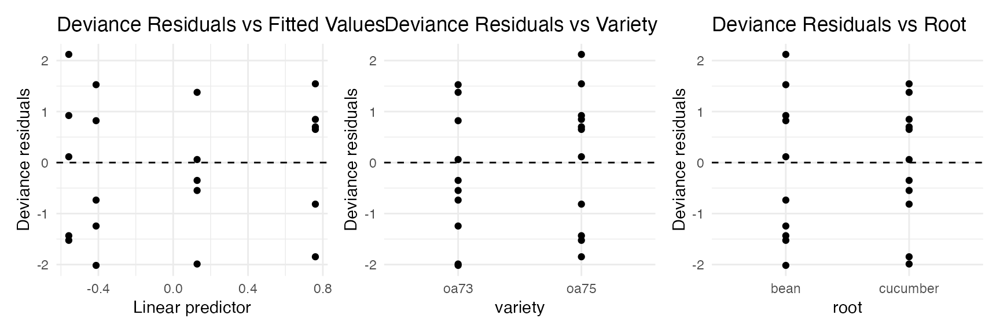

library(patchwork)
library(ggformula)23: Overdispersion and Quasibinomial Logistic Regression
Stat 230 - Spring 2026
Data overview
Orobanche is a genus of parasitic plants without chlorophyll that grow on the roots of flowering plants. In an experiment, seeds from two varieties, Orobanche aegyptiaca 75 and Orobanche aegyptiaca 73, where brushed with extract from either a cucumber root or a bean root. Researchers recorded the number of seeds that eventually germinated.
Run the code chunk below to load the data:
orobanche <- read.csv("https://aluby.github.io/stat230/data/orabanche.csv")The variables in the data set are:
y: count of seeds germinatedn: number of seedsvariety: either oa75 or oa73root: either cucumber or bean
Model from last time
Last class we fit the following model:
\[\text{logit}(\pi_i) = \beta_0 + \beta_1 \text{variety} + \beta_2 \text{root} + \beta_3 \text{variety}\cdot\text{root}\]
oro_glm <- glm(y/n ~ variety + root + variety:root,
weights = n,
data = orobanche,
family = "binomial")
summary(oro_glm)
Call:
glm(formula = y/n ~ variety + root + variety:root, family = "binomial",
data = orobanche, weights = n)
Coefficients:
Estimate Std. Error z value Pr(>|z|)
(Intercept) -0.4122 0.1842 -2.238 0.0252 *
varietyoa75 -0.1459 0.2232 -0.654 0.5132
rootcucumber 0.5401 0.2498 2.162 0.0306 *
varietyoa75:rootcucumber 0.7781 0.3064 2.539 0.0111 *
---
Signif. codes: 0 '***' 0.001 '**' 0.01 '*' 0.05 '.' 0.1 ' ' 1
(Dispersion parameter for binomial family taken to be 1)
Null deviance: 98.719 on 20 degrees of freedom
Residual deviance: 33.278 on 17 degrees of freedom
AIC: 117.87
Number of Fisher Scoring iterations: 41. Use the summary() results above to perform an overall goodness of fit test. What do you conclude?
2. We should also check the validity of the model, specifically whether linearity is satsified and if there are any outliers. The plots below show the deviance residual plots. Do you see any evidence of nonlinearity or extreme outliers?
aug_interaction <- broom::augment(oro_glm)
p1 <- gf_point(.resid ~ .fitted, data = aug_interaction, xlab = "Linear predictor", ylab = "Deviance residuals") |>
gf_hline(yintercept = 0, linetype = 2) |>
gf_labs(title = "Deviance Residuals vs Fitted Values")
p2 <- gf_point(.resid ~ variety, data = aug_interaction, xlab = "variety", ylab = "Deviance residuals") |>
gf_hline(yintercept = 0, linetype = 2) |>
gf_labs(title = "Deviance Residuals vs Variety")
p3 <- gf_point(.resid ~ root, data = aug_interaction, xlab = "root", ylab = "Deviance residuals") |>
gf_hline(yintercept = 0, linetype = 2) |>
gf_labs(title = "Deviance Residuals vs Root")
p1 + p2 + p3
Checking and correcting for overdispersion
TipHint:
You do not need to write any model-fitting code until Q4 in this section!
1. Use the summary() output to perform the ad hoc test of overdispersion. What do you conclude?
2. What is the ad-hoc estimate of \(\widehat\psi\)? Use this to calculate \(\text{SE}_{quasil}(\hat{\beta}_2)\).
3. Construct a 95% confidence interval for \(\beta_2\) using the adjusted standard error.
4. Now, confirm your answer by fitting a glm() model with family = "quasibinomial" and finding the confidence interval
oro_qglm <- glm(___ ~ ___,
weights = ___,
data = ___,
family = ___)5. The confidence intervals computed by R may be slightly different than the ones you computed “by hand” due to different estimates of \(\widehat\psi\). What estimate of \(\widehat\psi\) did R use? (Hint: run summary() on your quasibinomial glm)
6. What does your result from Q5 imply about the necessity of the interaction term? Is this the same or different than you conclusion about the interaction term using the binomial model?
Function quick reference
The following table summarizes the functions discussed above:
| Function | Purpose |
|---|---|
glm() |
Fit generalized linear models, including quasibinomial logistic regression models. |